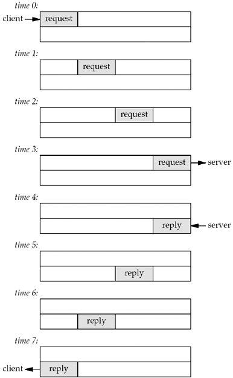
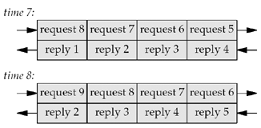

| [ Team LiB ] |
|
6.5 Batch Input and BufferingUnfortunately, our str_cli function is still not correct. First, let's go back to our original version, Figure 5.5. It operates in a stop-and-wait mode, which is fine for interactive use: It sends a line to the server and then waits for the reply. This amount of time is one RTT plus the server's processing time (which is close to 0 for a simple echo server). We can therefore estimate how long it will take for a given number of lines to be echoed if we know the RTT between the client and server. The ping program is an easy way to measure RTTs. If we run ping to the host connix.com from our host solaris, the average RTT over 30 measurements is 175 ms. Page 89 of TCPv1 shows that these ping measurements are for an IP datagram whose length is 84 bytes. If we take the first 2,000 lines of the Solaris termcap file, the resulting file size is 98,349 bytes, for an average of 49 bytes per line. If we add the sizes of the IP header (20 bytes) and the TCP header (20), the average TCP segment will be about 89 bytes, nearly the same as the ping packet sizes. We can therefore estimate that the total clock time will be around 350 seconds for 2,000 lines (2,000x0.175sec). If we run our TCP echo client from Chapter 5, the actual time is about 354 seconds, which is very close to our estimate. If we consider the network between the client and server as a full-duplex pipe, with requests going from the client to the server and replies in the reverse direction, then Figure 6.10 shows our stop-and-wait mode. Figure 6.10. Time line of stop-and-wait mode: interactive input. A request is sent by the client at time 0 and we assume an RTT of 8 units of time. The reply sent at time 4 is received at time 7. We also assume that there is no server processing time and that the size of the request is the same as the reply. We show only the data packets between the client and server, ignoring the TCP acknowledgments that are also going across the network. Since there is a delay between sending a packet and that packet arriving at the other end of the pipe, and since the pipe is full-duplex, in this example, we are only using one-eighth of the pipe's capacity. This stop-and-wait mode is fine for interactive input, but since our client reads from standard input and writes to standard output, and since it is trivial under the Unix shells to redirect the input and output, we can easily run our client in a batch mode. When we redirect the input and output, however, the resulting output file is always smaller than the input file (and they should be identical for an echo server). To see what's happening, realize that in a batch mode, we can keep sending requests as fast as the network can accept them. The server processes them and sends back the replies at the same rate. This leads to the full pipe at time 7, as shown in Figure 6.11. Figure 6.11. Filling the pipe between the client and server: batch mode. Here we assume that after sending the first request, we immediately send another, and then another. We also assume that we can keep sending requests as fast as the network can accept them, along with processing replies as fast as the network supplies them.
To see the problem with our revised str_cli function in Figure 6.9, assume that the input file contains only nine lines. The last line is sent at time 8, as shown in Figure 6.11. But we cannot close the connection after writing this request because there are still other requests and replies in the pipe. The cause of the problem is our handling of an EOF on input: The function returns to the main function, which then terminates. But in a batch mode, an EOF on input does not imply that we have finished reading from the socket; there might still be requests on the way to the server, or replies on the way back from the server. What we need is a way to close one-half of the TCP connection. That is, we want to send a FIN to the server, telling it we have finished sending data, but leave the socket descriptor open for reading. This is done with the shutdown function, which is described in the next section. In general, buffering for performance adds complexity to a network application, and the code in Figure 6.9 suffers from this complexity. Consider the case when several lines of input are available from the standard input. select will cause the code at line 20 to read the input using fgets and that, in turn, will read the available lines into a buffer used by stdio. But, fgets only returns a single line and leaves any remaining data sitting in the stdio buffer. The code at line 22 of Figure 6.9 writes that single line to the server and then select is called again to wait for more work, even if there are additional lines to consume in the stdio buffer. The reason for this is that select knows nothing of the buffers used by stdio—it will only show readability from the viewpoint of the read system call, not calls like fgets. For this reason, mixing stdio and select is considered very error-prone and should only be done with great care. The same problem exists with the call to readline in the example in Figure 6.9. Instead of data being hidden from select in a stdio buffer, it is hidden in readline's buffer. Recall that in Section 3.9 we provided a function that gives visibility into readline's buffer, so one possible solution is to modify our code to use that function before calling select to see if data has already been read but not consumed. But again, the complexity grows out of hand quickly when we have to handle the case where the readline buffer contains a partial line (meaning we still need to read more) as well as when it contains one or more complete lines (which we can consume). We will address these buffering concerns in the improved version of str_cli shown in Section 6.7. |
| [ Team LiB ] |
|